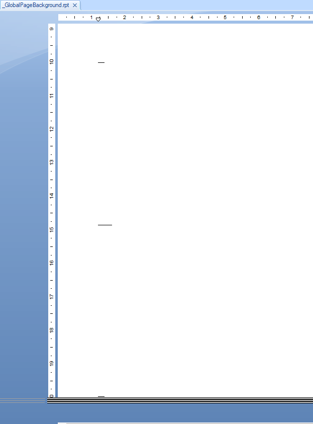
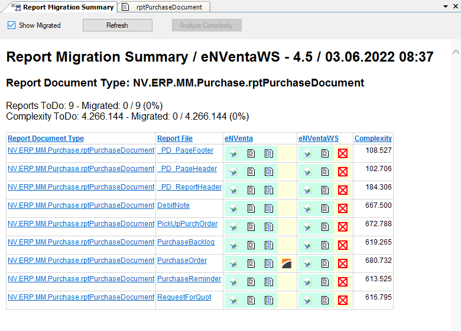
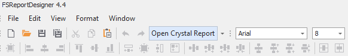
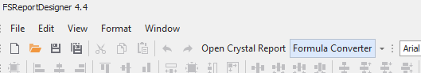
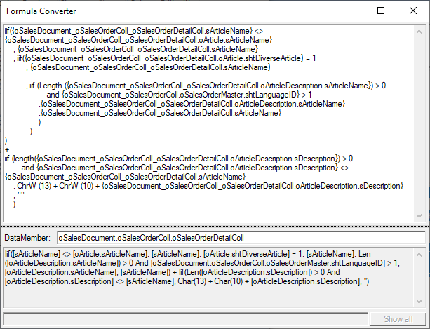
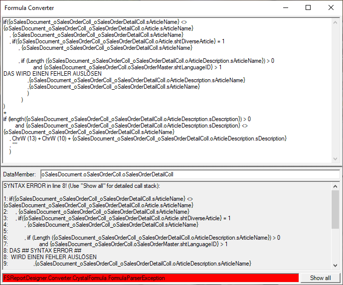
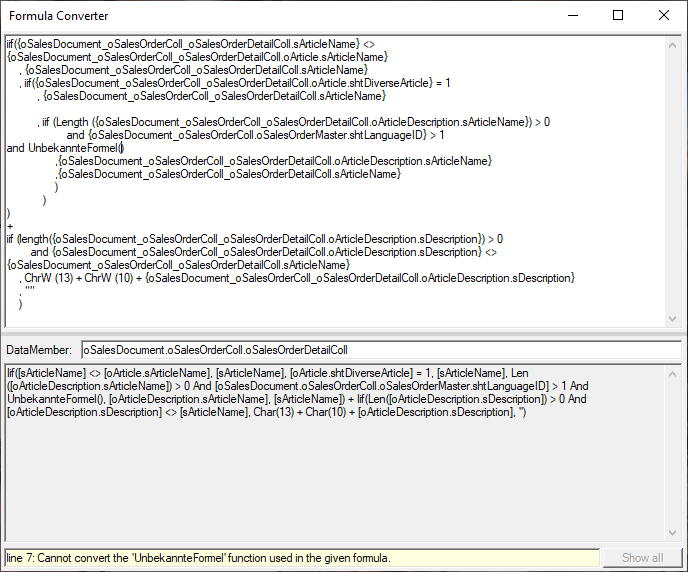
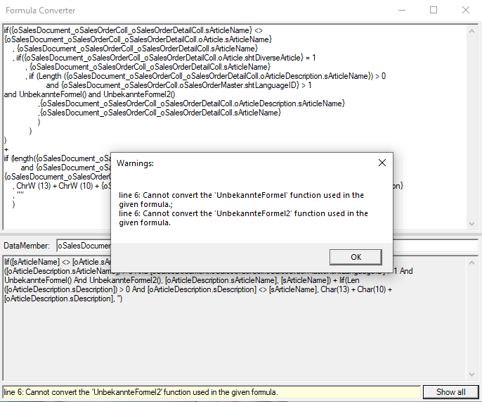

Report Migration
Zur Unterstützung der Migration stehen im Framework Studio und im FS Report Designer einige spezielle Funktionen zur Verfügung.
Unterschiede zwischen Crystal Reports und DevExpress®
Begrifflichkeiten
- Bands sind vergleichbar mit Sektionen in Crystal Reports.
- Expressions sind das Formel-Äquivalent von DevExpress®. Sie werden allerdings nicht, wie in Crystal Reports, zentral verwaltet, sondern sind immer Teil eines Properties.
- Durch Expressions an Properties lassen sich die Unterdrückungsformeln von Crystal nachbilden.
Fold Marks
In Crystal Reports wurden Falzmarken mit dem Subreport „GlobalPageBackground“ gelöst, welcher sich hinter den Rest des Beleges gelegt hat:

In DevExpress® wurde hierfür das Custom Control Fold Mark Settings angeboten.
Datasource
Während in Crystal nur angehakte DataSource Eigenschaften im Report auftauchen, werden alle im Tab vorkommenden Daten an DevExpress® übergeben.
Report Migration Summary
Für die Migration der Crystal Reports zu DevExpress® muss der zu erwartende Aufwand bewertet werden können.
Diese Aufwandsübersicht kann folgendermaßen aufgerufen werden:
- Menü Tools / Report Migration Summary - zeigt eine komplette Liste mit allen Reports an.
- Am Namespace über das Kontext-Menü Report Migration Summary - zeigt alle Reports des Namespaces und darunterliegender Namespaces an.
- Im geöffneten Report Document Type über das Menü View / Report Migration Summary - zeigt die Report Files dieses Reports an.
In der nachfolgenden Abbildung ist die Zusammenfassung für ein einzelnes RDT dargestellt: 
Folgende Informationen sind ersichtlich:
- Welche Reports sind noch nicht konvertiert?
- Aus welchem Package stammt dieser Report?
- Gibt es in der Basis eine DevExpress®-Variante?
- Summe der nicht konvertierten Crystal-Reports
Angezeigt werden Report Files, die im derzeitig angemeldeten Package überschrieben sind.
Icons und Datei-Links
- Nicht konvertierter DevExpress® Report
- Öffnet den Crystal-Designer
- Neben dem Crystal-Icon - Öffnet die Text-Variante des Crystal Reports
- Öffnet den DevExpress® Report Designer
- Öffnet ein DiffTool mit der Text-Variante und vergleicht mit dem darüber liegenden Package
- Datei-Link in der Spalte "Report Document Type" - Öffnet den RDT
- Datei-Link in der Spalte "Report File" - Öffnet den RDT und fokussiert das File
Note
Über die Icons können parallel mehrere Report Files zur Ansicht geöffnet werden. Eine Bearbeitung der Report Files muss über das Designer-Fenster erfolgen.
Weitere Eigenschaften
Die Spalten "Report Document Type", "Report File" und "Complexity" können sortiert werden.
Show Migrated - In der Liste werden auch die konvertierten Report Files angezeigt. In der Summary über der Tabelle wird der Fortschritt eingeblendet.
Analyze Complexity - Anzeige der Komplexität erfolgt optional. Bei erfolgreicher Analyse wird die Spalte "Complexity" und die entsprechende Summary-Zeile eingeblendet.
Open Crystal Report
Wenn beim Öffnen des FS Report Designer bekannt ist, dass ein ihm zugeordneter Crystal-Report existiert und ein Crystal-Designer konfiguriert ist, wird ein zusätzlicher Button "Open Crystal Report" angeboten.

Bei dessen Betätigung wird im Hintergrund der zugeordnete Report im readonly-Modus im Crystal-Editor geöffnet.
Hierfür wird der in den Einstellungen hinterlegte Pfad des Crystal Editors genutzt.
Formula Converter
Es wird ein zusätzlicher Button "Formula Converter" im FS Report Designer generiert.

Eine Betätigung dessen öffnet ein separates Fenster, welches eine automatische Konvertierungsroutine für Crystal-Formeln beinhaltet.

Textbox Input: In die obere Textbox lässt sich eine Crystal Reports-Formel eintragen, die konvertiert werden soll.
Splitter: Zwischen den beiden Textboxen liegt ein Splitter, um leeren Platz zwischen den Textboxen ausnutzen zu können.
DataMember-Feld: Datenquellen-Felder in Crystal-Formeln sind oft mit langen Qualifizierungsketten im Namen versehen. Der hier angegebene DataMember wird im Ergebnis vor den einzelnen Feldern weggekürzt. Das Feld wird mit dem am Report selbst definierten DataMember vorbelegt.
Warning
Es wird empfohlen, den DataMember so spezifisch wie möglich pro zu übersetzender Formel zu definieren. Unnötig ausholend qualifizierte Felder stören nicht nur beim Lesen der Formel, sie können auch ihre Funktionalität beeinträchtigen.
- Textbox Output: In der unteren Textbox werden die Ergebnisse des Formel-Konvertierers ausgegeben. In einem Fehlerfall wird stattdessen die Zeilennummer des Syntaxfehlers angezeigt:

- Textbox Warnung/Fehler: Hier werden genauere Fehlermeldungen und auch Warnungen ausgegeben. Es wird jeweils nur die erste Meldung ausgegeben, falls es mehrere gibt. Warnungen werden folgendermaßen angezeigt:

- Button "Show all": Wenn mehrere Warnungen existieren oder eine Fehlermeldung mit Call-stack, werden diese hiermit in einer Message Box angezeigt:
